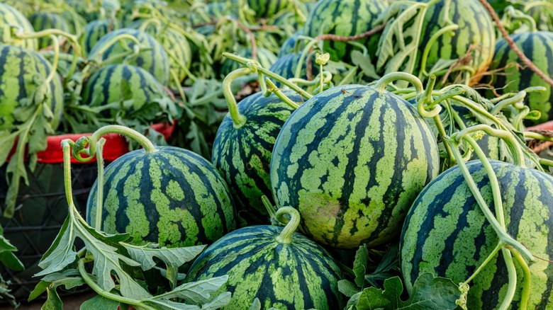

Cool Watermelon Facts!!!
There are many fun facts hidden in the world of watermelons!
1. Watermelon has different shapes!

Watermelon comes in various shapes, from round to oval and even triangular! Some of these shapes can be quite unique!
2. Watermelon technically classified as both a fruit and a vegetable!

Watermelon is technically classified as a fruit because it contains seeds and develops from the flower of the plant. However, it is also considered a vegetable in some contexts due to its culinary uses.
3. Watermelon became seedless!

Watermelon became seedless through selective breeding and genetic modification. This has made them more convenient to eat and more appealing to consumers!
Go back to the main page!